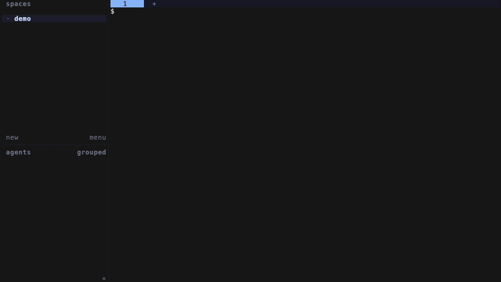

Panes that ease into place.
Smooth split-ratio effects for Herdr. When a pane opens or closes, the panes around it glide to their new sizes instead of jumping.
herdr plugin install carlosiborra/herdr-motion
What it does
Open
A new pane slides open from its edge, and the row evens out as it grows: three columns end as thirds.
Close
The space a pane leaves is shared evenly between its neighbours, eased.
Eight styles
From snappy to cinematic, each previewed live in the settings picker before you choose.
Quiet when idle
An event-driven worker with no polling: zero wakeups while nothing changes.
Install
Install it from GitHub. Herdr shows what it will run and asks first.
herdr plugin install carlosiborra/herdr-motion
Bind a key in
~/.config/herdr/config.toml.[[keys.command]] key = "prefix+shift+m" type = "plugin_action" command = "carlosiborra.motion.open"
Check and reload your config.
herdr config check && herdr server reload-config
Start the effects worker now, or let it start with the next Herdr session.
herdr plugin action invoke carlosiborra.motion.start
| ↑ ↓ | Move between styles and switches |
| Enter | Choose a style |
| Space | Toggle an effect |
| ◂ ▸ | Change the speed |
| e | All effects on or off |
| q Esc | Close |
What it touches
Listens to pane and layout events and changes split ratios. Never reads pane contents. Runs one small background worker that stops with the server or when the plugin is disabled.
Herdr plugins run with your user's permissions and are not sandboxed, so the full source is short, dependency-free Python you can read before installing.